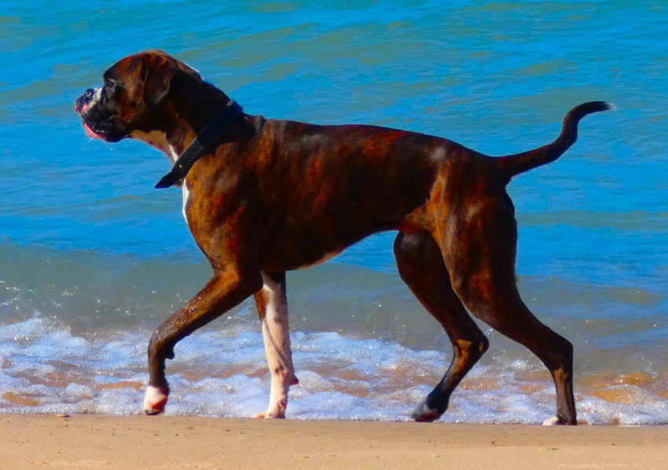

Indiana Bear von Bachbett, CGC, TKN
Indy is my best buddy. He loves to learn and train and strives to do whatever I ask of him. Even when just relaxing around the house he constantly brings me toys, volunteering to play tug, fetch and catch. He is also a great guard dog, very protective of me, his baby 1/2 sister Jibaya and our property, with nothing happening that he does not notice and alert to. He has great stamina and loves to go for long walks/runs in the woods around our farm and anywhere else I take him. He is very versatile, always happy and fun-loving. He earned the Canine Good Citizen (CGC) title at only 6 months of age, also has a Trick Dog Novice (TKN) title and is currently in training for Agility and IGP.
Indy was born on March 1, 2020, has an OFA Normal heart, OFA Good hips and is DM clear. He weighs 75 pounds.